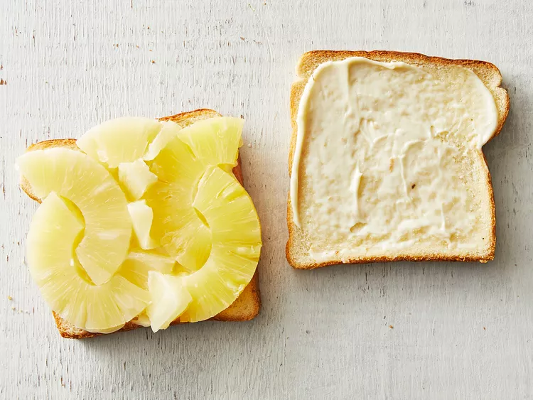

<!DOCTYPE html>
<html lang="en">
<head>
        <meta charset="UTF-8:>
        <meta name="viewport" content = "width=device-width, initial-scale=1.0">
        <title>Document</title>
</head>
<body>


        <script src="pineappleSandwich.html"></script>

</body>
</html>

<h3> Ingredients </h3>

<ul>
<li>2 slices soft, white sandwich bread</li>
<li>2 Tbsp. mayonnaise or Miracle Whip</li>
<li>4 canned, sliced pineapple rings, drained and blotted dry (from 1 15 oz. can)</li>
</ul>
<h3>Directions</h3>
<ol>

<li>Gather your ingredients</li>

<li>Spread one side of each bread slice generously with mayonnaise.</li>

<li>Arrange the pineapple rings over the mayonnaise on one slice of bread by breaking two rings open 
    and arranging them so that they intertwine on the bread. 
    Break the remaining rings into smaller wedges to fill in any gaps. 
    Place the other slice of bread on top and serve immediately.</li>
</ol>
